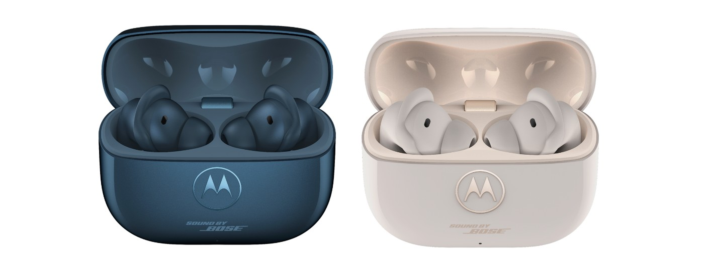

先把说话声收进去
这副耳机首先要解决的是人声输入。官方列出两侧共六枚高信噪比麦克风与两枚语音拾取单元，再由配套处理改善通话。多人交谈、风声与用户自己说话混在一起时，语音识别拿到的内容会影响后面的翻译。产品介绍没有给出这些场景的独立测试结果，不能从硬件数量推导清晰度提升幅度。试用时可先核对原语转写是否听对，再核对译文是否保留姓名、否定与数字，避免把前端漏听误归为翻译模型的问题。
moto buds ultra 27 / moto buds 2 ultra · 消费耳机／官方发布

这副耳机首先要解决的是人声输入。官方列出两侧共六枚高信噪比麦克风与两枚语音拾取单元，再由配套处理改善通话。多人交谈、风声与用户自己说话混在一起时，语音识别拿到的内容会影响后面的翻译。产品介绍没有给出这些场景的独立测试结果，不能从硬件数量推导清晰度提升幅度。试用时可先核对原语转写是否听对，再核对译文是否保留姓名、否定与数字，避免把前端漏听误归为翻译模型的问题。
实时翻译需要兼容Motorola手机的内置翻译应用，支持语言与地区还会影响可用性。耳机在交互上离嘴和耳朵更近，却不等于离开手机仍能完成处理。用户在首次使用前应检查自己的机型与语言组合，而不只看蓝牙是否配对成功。对短暂问路，少看屏幕可能有用；对金额、地址或重要安排，保留能回看的文字仍很重要。本次没有执行双人对话测试，也没有据厂商的实时措辞推断零等待，实际轮流说话和纠正方式仍需验证。
点头接听、摇头拒接和长按左耳唤起助手，把常见动作移到头部与手指。运动或与旁人交谈时，系统还要区分自然动作与有意指令，因此反馈是否清楚比手势表看起来丰富更重要。Qira需要账户、兼容设备和活动连接，完整功能依赖网络；语音唤醒则属于未来更新。应区分现在可用的长按与尚未上线的唤醒词，避免购买后发现演示入口不在当前版本。需要静音、取消或退出时，用户也不该靠猜测一次动作是否已经生效。
官方全球发布给出一百九十九欧元起价，计划在选定市场陆续推出，美国稿只说明未来数月，没有公布本地价格。Bose参与调音与降噪不等于每个连接设备都获得相同功能。对已有其他品牌手机的人，先确认翻译、助手和空间音频的限制，再比较佩戴与声音更有效。普通耳机加手机翻译、手动接听仍可完成相同任务；新增硬件是否值得，取决于实际减少了多少掏手机和重复确认。本次没有上手，也没有把标称续航或厂商效果措辞当成测量。